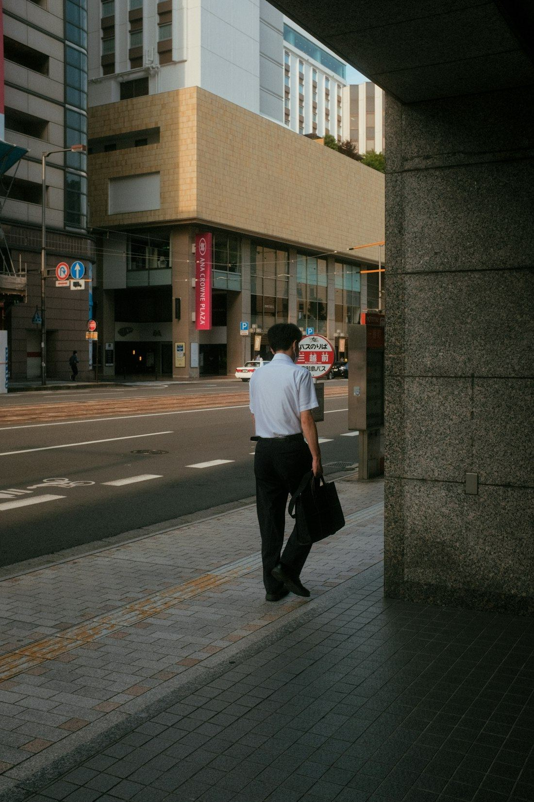
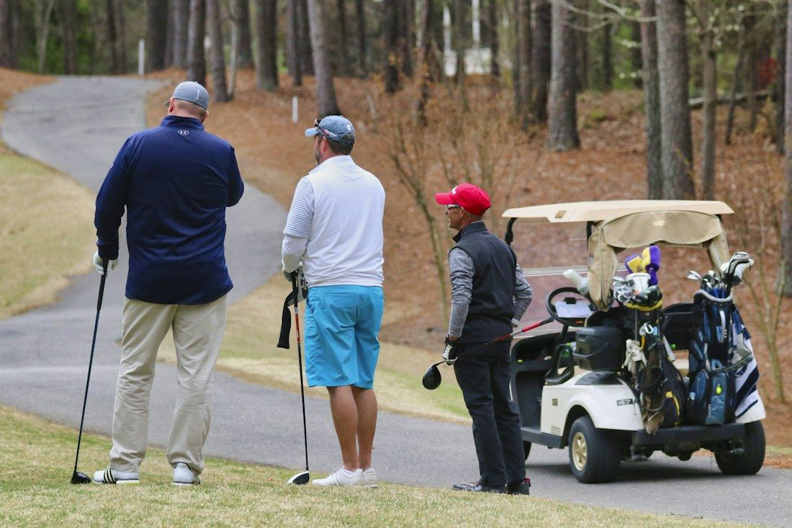
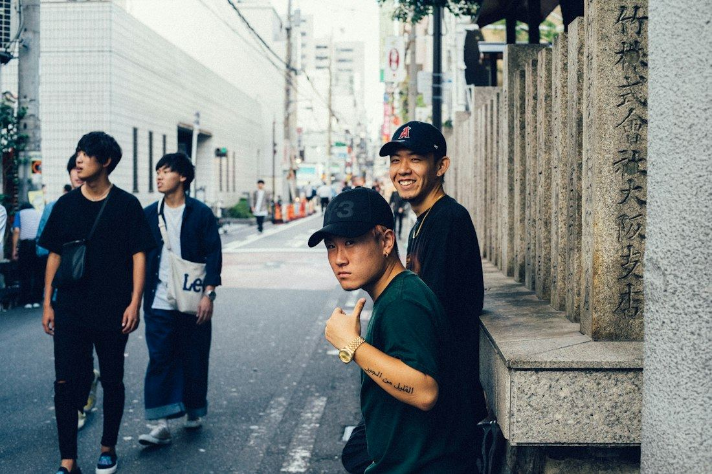
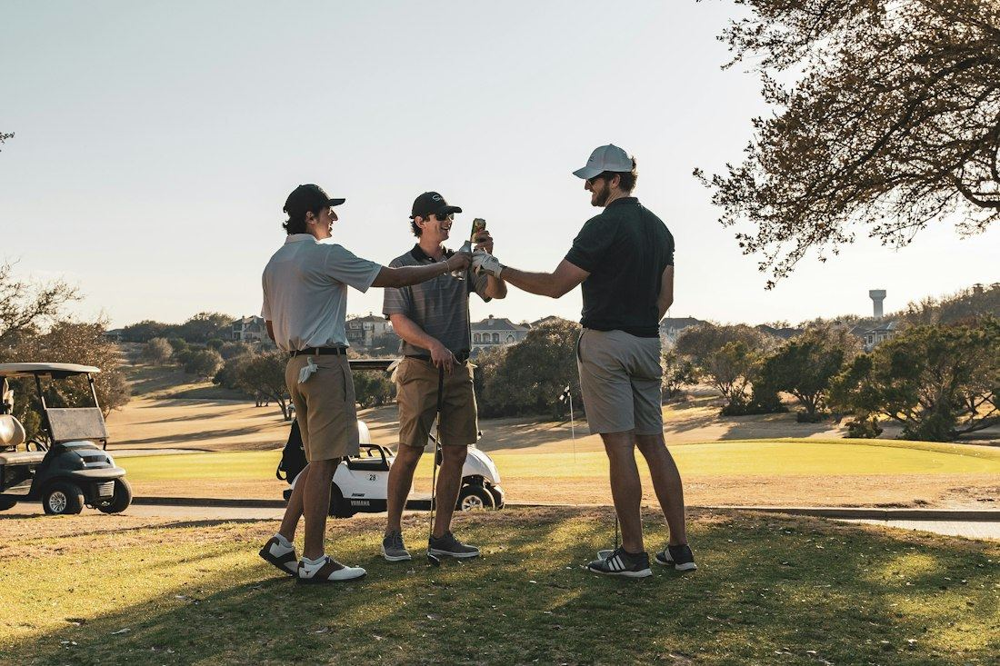

ゴルトモ20〜30代の
ゴルトモ20〜30代のゴルフ友達マッチング
職場の人に誘われて、ゴルフを始めた人へ
ゴルフは楽しい。
でも、いつも職場の人と。
でも、
気を
同世代の
ひとつでも
わかる！なら
その
始めたきっかけは
部長のひとこと
部長のひとこと

「ゴルフ、

ぜんぶ
上司の
欲しいのは
気を
職場の外のゴル友は
押すところから
押すところから
空いてる
同じ
※ここに
いま、千葉と埼玉で募集中
次のゴルフが
決まるまで
1LINEで
LINEで登録
アプリの
2行ける

行ける日のカレンダー（見本データ）
行ける日を押す
空いている
33人そろったら、

その日のグループチャット（見本データ）
3人そろったら、チャットへ
運営が
休みの日は
気を遣わないゴルフを
気を遣わないゴルフを


- スコアを笑
い合える 同世代 - 職場とは
別のゴル友 - コンペ前の練習ラウンドにも
職場の外のゴル友
つくってみよ。
つくってみよ。
気楽に
行ける日のカレンダーいま募集中のラウンド
LINELINEで行ける日を押す（無料）
押すと
合わなければ、
よくある質問
- 初心者でも
大丈夫？ - 「初心者歓迎」の
募集も あります。 スコアの 目安は 先に 書いておけます。 - どこで
回っていますか？ - いまは
千葉・埼玉が 中心です。 - お金は
かかる？ - アプリは
無料。 かかるのは プレー代だけです。